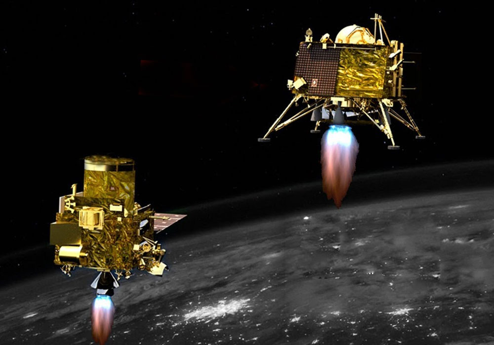

OUR MISSION
For bringing space-based transparency to industrial supply chains.
Kuhama Leo-based geospatial analytics
company Space Prospection meshes cell phone geolocation with images obtained from satellites,
drones, balloons to give businesses a god’s-eye view of a range of human activit and simulating the Space.


About
We Provide The Best Technology
Since our first test flight in 2017, Space Prospection has launched 46 small satellites into space aboard its Electron rockets. In 2020, the launch provider started offering a comprehensive commercial service that designs, builds, launches, and operates satellites as a bundled service. It launched its first in-house satellite in August. In 2021 NASA’s Capstone project will use Space Prospection’s Electron Rocket and its photon satellite launch platform to send up a lunar orbiter, which will test and verify the stability of the moon for the Lunar Gateway space station.

We Have Ingenious Plans for Future
With 130-plus mini satellites in orbit, Space Prospection can deliver customers daily high-resolution images of any location on Earth. In 2020, it launched two news service: Rapid Revisit, which provides 50-centimeter-resolution satellite imagery updated between seven and 12 times per day, and Automated Change Detection. The company says bookings doubled this year, as customers made more remote check-ins of locations they would have visited in-person pre-pandemic. In December, Human Rights Watch used Space Prospection imagery to monitor illegal rocket and missile fire by Armenian forces against Azerbaijan.

Be Part of Our Community
Your membership supports the work we do to inspire the next generation of space exploration through testing launches, the innovative research and technical work we manage globally to ensure the technical advancement and the big plans we have to expand our impact in the coming years. We couldn’t do it without you!
Financial Overview
In November, small-launch vehicle startup Space Prospection raised $500 million in one of the largest investments ever in a private space company, valuing it at over $2 billion. The money will go toward scaling up production of its 3D-printed Terran 1 rocket. In 2020, the company reported successful pressure tests of its 3D-printed fuel tanks and a test firing of its Aeon 1 rocket engine. In June, it signed a contract with Iridium for up to six launches of the company’s communications satellites. Its first hypersonic rocket launch is planned for the end of 2021.
Projects
-
MARS CURIOSITY ROVER
The Mars Science Laboratory and its rover centerpiece, Curiosity, is the most ambitious Mars mission yet flown by NASA. The rover landed on Mars in 2012 with a primary mission to find out if Mars is, or was, suitable for life. Another objective is to learn more about the Red Planet's environment. In March 2018, it celebrated 2,000 sols (Mars days) on the planet, making its way from Gale Crater to Aeolis Mons (colloquially called Mount Sharp), where it has looked at geological information embedded in the mountain's layers. Along the way, it also has found extensive evidence of past water and geological change.
Read More -

INTERTERNATIONAL SPACE STATION
The International Space Station (ISS) took 10 years and more than 30 missions to assemble. It is the result of unprecedented scientific and engineering collaboration among five space agencies representing 15 countries. The space station is approximately the size of a football field: a 460-ton, permanently crewed platform orbiting 250 miles above Earth. It is about four times as large as the Russian space station Mir and five times as large as the U.S. Skylab.
Read More
Proj 1
CHANDRAYAAN-3 2022
The Chandrayaan-3 mission has been planned as only a lander-rover mission to demonstrate India’s capability of soft landing on a celestial body that will communicate with Earth via the existing orbiter from Chandrayaan-2 whose lifespan has been estimated to be seven years
Chandrayaan-3 was planned to demonstrate India’s capability of soft landing on a celestial body, with the rover then communicating with Earth via the existing orbiter from Chandrayaan-2. The orbiter has an estimated lifespan of seven years. The third mission was announced months after the Vikram lander aboard Chandrayaan-2 crash-landed on the lunar surface just 2.1 km from its destination in September 2019. Chandrayaan- 3 was initially scheduled for late 2020 or early 2021, but the disruption caused by the pandemic affected the schedule.
Proj 2
GAGANYAAN 2023
The Gaganyaan mission — India’s first manned space flight — aims to carry three crew members to an orbit about 400km above the earth for five to seven days, and get them back safely.
Scientists at the Indian Space Research Organisation (ISRO) are hard at work to get all the systems in place, including a human-rated launch vehicle, crew and service modules, a crew escape system, and the environment control and life support systems (ECLSS), to meet the launch timeline of the Gaganyaan mission slated for late 2022 or early 2023, according to people familiar with the matter at the space station.
Proj 3

LUNAR LANDER 2023
Firefly completes design of Moon mission, aiming for 2023 launch. Although Firefly Aerospace is only a few weeks removed from its first-ever launch attempt, the Texas-based space company is already making good progress toward its first mission to land on the Moon.
Firefly said that it has completed the "critical design review" phase of its program to develop
a lunar lander. This means the company can now proceed to build and order components for the "Blue Ghost"
spacecraft and begin its assembly. Firefly aims to launch the spacecraft as the primary payload on a
Falcon 9 rocket in the fall of 2023.
NASA is sponsoring the mission as part of its Commercial Lunar Payload Services Program, through which it pays private companies to deliver scientific experiments to the Moon. NASA is paying $93.3 million for this Blue Ghost mission, which will carry 10 payloads down to the Mare Crisium lunar basin in September 2023.
Blog
-

SUCCESSFUL REPAIR OF THE MX-1 SAT
FEBRUARY 6, 2019Moon Express, a privately held company driven by a short-term goal of winning the Google Lunar X PRIZE competition, and a longer-term strategy of mining the Moon, last week revealed its MX-1 lunar lander at the closing session of Autodesk University in Las Vegas. Not a one-trick pony, the MX-1 is being designed as the first of a series of robotic spacecraft that can carry out a multitude of tasks in Earth orbit as well as in deep space.
Read More
About the size of a large coffee table, the MX-1 is a spacecraft that has the self-contained capability to reach the lunar surface from a geosynchronous transfer orbit, such as those commonly followed by communications satellites on their way to geosynchronous orbit. The delta-v required to move from a geosynchronous transfer orbit through low lunar orbit to a lunar landing is about 3.2 km/sec (7,160 mph). This requirement places rather strong conditions on the makeup and effectiveness of the lander's propulsion system. -

ALIEN SIGNAL DISCOVERY
FEBRUARY 3, 2023On October 13, several news websites reported that Earth has received its first radio signals from outside our solar system and speculated that it could be ‘aliens calling.’
Read More
The articles were based on a paper published on October 11 in Nature Astronomy. The researchers said that they had discovered radio signals from 19 distant red dwarf stars or M dwarfs. M dwarfs are stars smaller than our Sun and are known to have magnetic field strength about thousand times of the magnetic field of our Sun.
“Our own Earth has aurorae, commonly recognised here as the northern and southern lights, that also emit powerful radio waves – this is from the interaction of the planet’s magnetic field with the solar wind,” he said. “But in the case of aurorae from Jupiter, they’re much stronger as its volcanic moon Io is blasting material out into space, filling Jupiter’s environment with particles that drive unusually powerful aurorae
-
FEATURED POSTS

ORION EMS-1
FEBRUARY 6, 2023 -
RECENT POSTS
-

ALIEN LIFE
FEBRUARY 3, 2023 -

THE GALAXY
FEBRUARY 1, 2023
-
Single Post

MARTIAN ROVER JOURNEY
FEBRUARY 6, 2020After a harrowing plunge through the thin Martian atmosphere, the robotic explorer ‘Percy’ can begin its landmark hunt for signs of ancient life
NASA’s Perseverance rover is set to begin its journey across a crater in search of ancient
life on the red planet. The crater that the Mars rover is going to explore was once a big
lake, when billions of years ago, the red planet was wetter than it is today. During its
journey, Perseverance will take the command of navigation itself using AutoNav, which means
that the rover will not be getting any additional directions while it is driving. AutoNav
is an intelligent algorithm that helps the rover in 3D-mapping the surroundings and finding
the best navigation route, during its drive.“We have a capability called ‘thinking while
driving’,” says Vandi Verma, a senior engineer in the rover’s planning team, in a NASA
statement. According to her, Perseveration is constantly “thinking” about the automatic
drive while its wheels are running. The rover dedicates one of its computers just for
this task.
However, just AutoNav is not enough for Perseverance to get by. The
rover team does a critical job by planning navigation routes and drafting instructions
for the rover to follow. AutoNav comes in handy because scientists cannot control the
rover with a joystick, thanks to the radio signal delay between Mars and Earth.
Perseverance, being able to travel at speed of 120 metres per hour, is faster
than its predecessor Curiosity, which was able to reach about 20 metres per hour. Curiosity
too is equipped with AutoNav, though with an earlier version. Perseverance’s navigation is
more advanced than Curiosity, not just in speed, but also in terms of walking on tougher
terrain. It also manages to avoid getting damaged at sharp pointy rocks, something Curiosity’s
AutoNav was not equipped to do.
-
FEATURED POSTS
ORION EMS-1
FEBRUARY 6, 2023 -
RECENT POSTS
-
ALIEN LIFE
FEBRUARY 3, 2023 -
THE GALAXY
FEBRUARY 1, 2023
-
Our Team
Karolina Sciver
Launch Director
Jessica Meir
Satellite Director

Jaxy Moore
Flight Director
Christina Kooch
Senior Astronaut
Charles M. Rice
Mission Chairman
Jaxy Moore
Chief Vehicle Designer